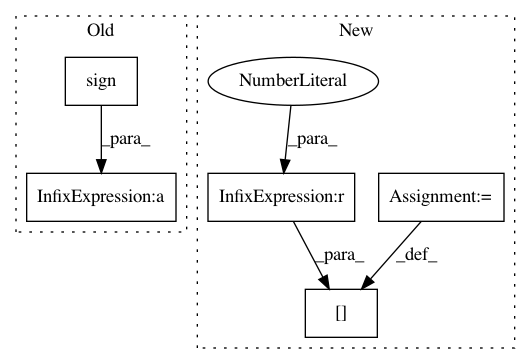

a6b09bcc318e4488e94c2a515cdaf762c52bda46,modules/functions.py,InPlaceABN,backward,#Any#Any#,119
Before Change
eydz = dz.new_zeros(dz.size(1))
dx = _backend.backward(z, dz, var, weight, bias, edz, eydz, ctx.affine, ctx.eps)
dweight = eydz * weight.sign() if ctx.affine else None
dbias = edz if ctx.affine else None
return dx, dweight, dbias, None, None, None, None, None, None, None
After Change
// dweight = eydz * weight.sign() if ctx.affine else None
dweight = eydz if ctx.affine else None
if dweight is not None:
dweight[weight < 0] *= -1
dbias = edz if ctx.affine else None
return dx, dweight, dbias, None, None, None, None, None, None, None
In pattern: SUPERPATTERN
Frequency: 3
Non-data size: 5
Instances
Project Name: mapillary/inplace_abn
Commit Name: a6b09bcc318e4488e94c2a515cdaf762c52bda46
Time: 2019-02-11
Author: samuel@mapillary.com
File Name: modules/functions.py
Class Name: InPlaceABN
Method Name: backward
Project Name: mapillary/inplace_abn
Commit Name: a6b09bcc318e4488e94c2a515cdaf762c52bda46
Time: 2019-02-11
Author: samuel@mapillary.com
File Name: modules/functions.py
Class Name: InPlaceABNSync
Method Name: backward
Project Name: scipy/scipy
Commit Name: e9eb6182d5d3297e79b432a66a2828eb720431ca
Time: 2015-03-16
Author: argriffi@ncsu.edu
File Name: scipy/sparse/linalg/_onenormest.py
Class Name:
Method Name: sign_round_up